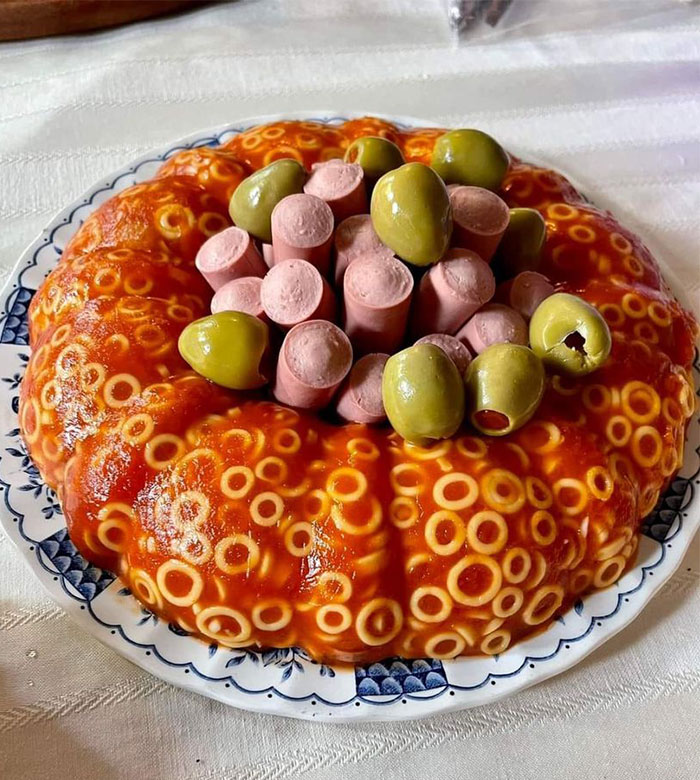

Spaghetti Jello with hotdogs and olives

I first tried making this recipe from a recommendation my mother gave me.
If the only ingredients you have in your fridge are gelatin, spaghetti O's, Olives, and hotdogs. Then make this IMMEDIATELY, it will satisfy you.
Ingredients
- Hotdogs
- Gelatin powder
- Olives
- Spaghetti O's
Steps
- Firstly, get a weird shaped bowl to prepare this nasty dish
- Then, cook your Spaghetti O's
- After that, let your Spaghetti O's become cold. Then put them in the Gelatin mixture
- Cut up your Hotdogs
- Place the cut up Hotdogs and the Olives on top of your jelly spaghetti
- Enjoy!